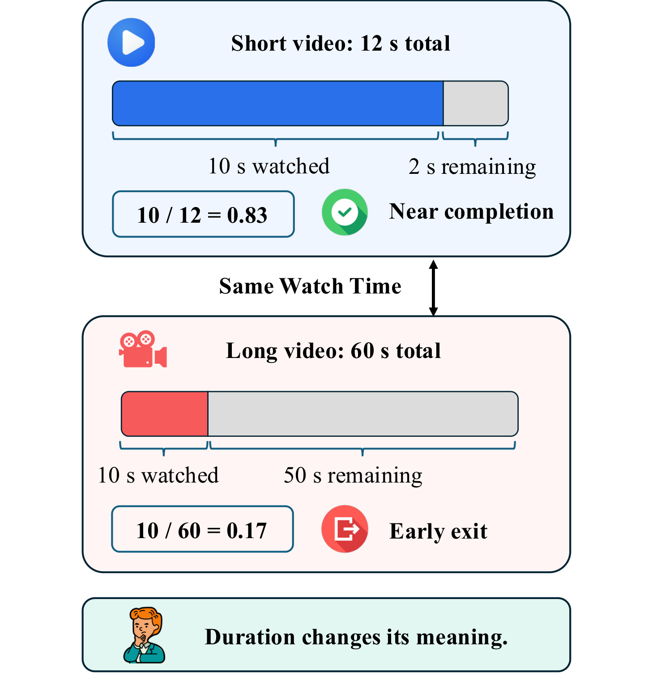
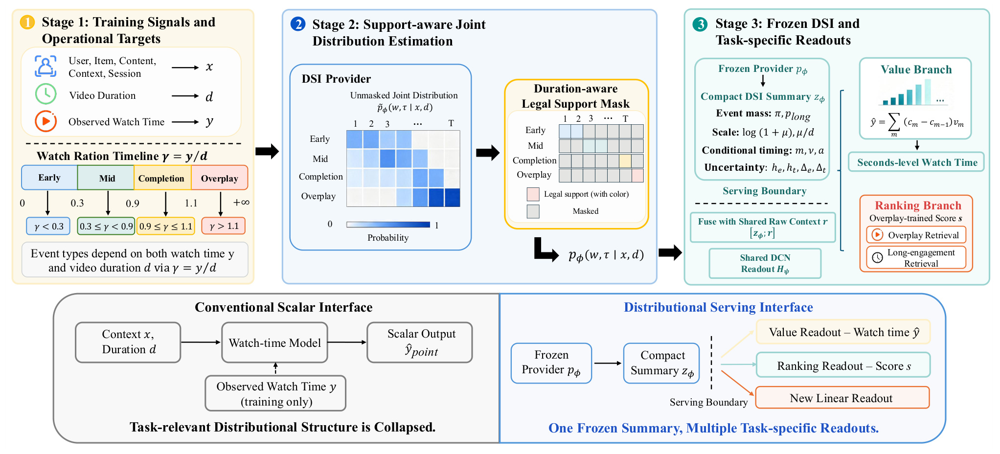
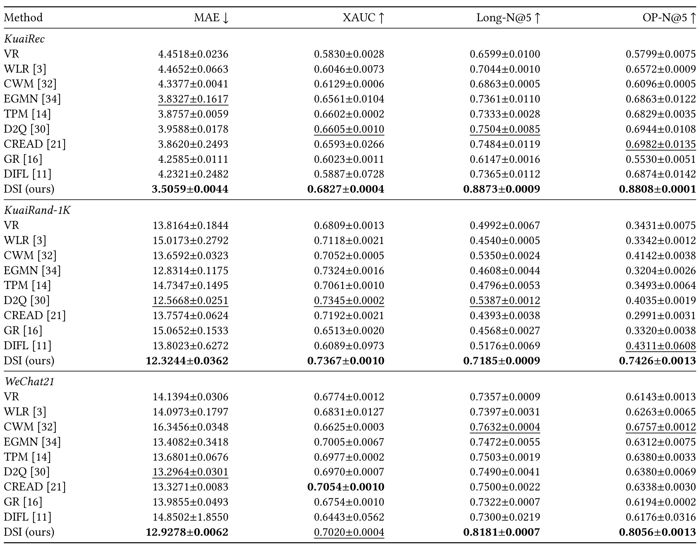
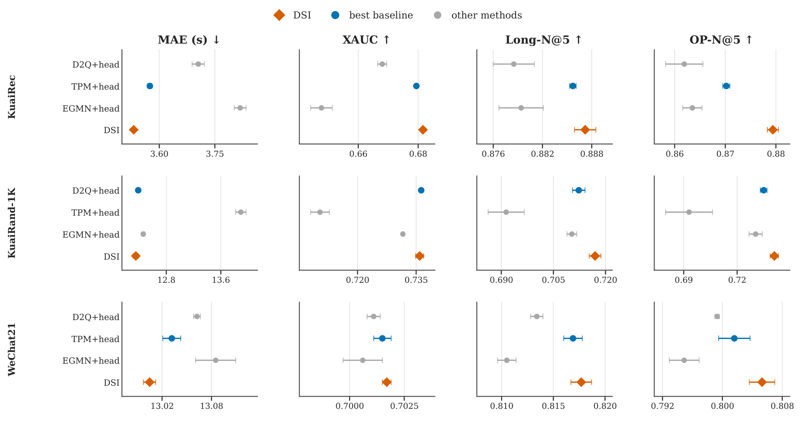
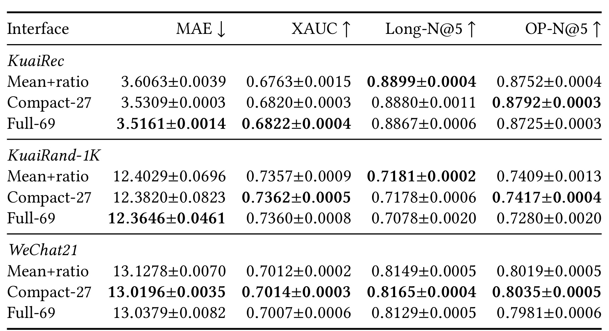
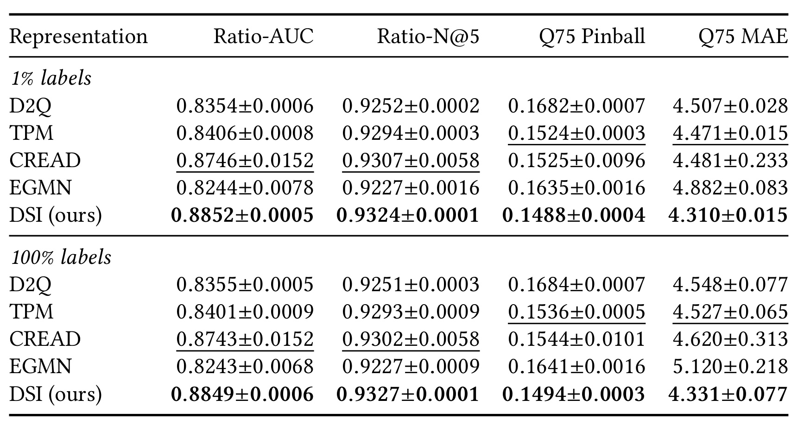
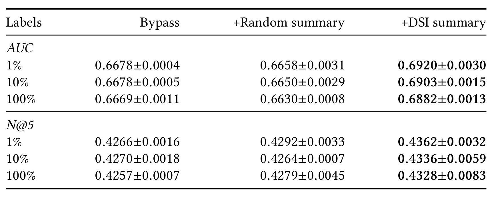
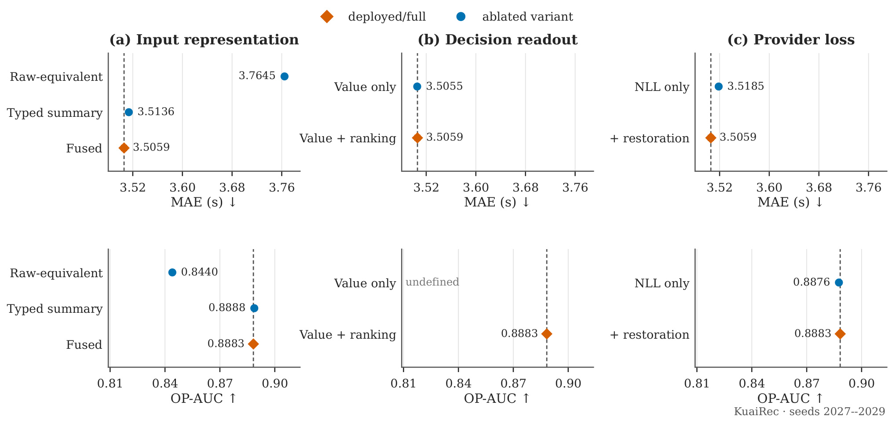
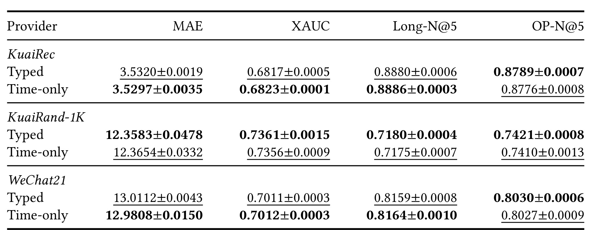
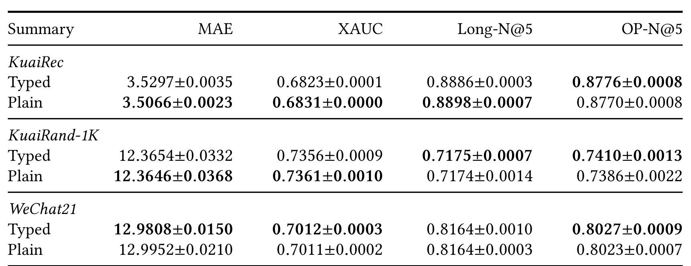

DSI：把观看时长预测改造成可复用的分布接口
Xuan Liu、Zhanyu Liu 和 Hefeng Zhou 来自上海交通大学，合作作者 Jingbin Qian 来自莱斯大学。他们在 Beyond a Scalar: Distributional Serving Interfaces for Watch-Time Prediction 中研究观看时长估计器的服务输出。论文 arXiv v1 于 2026-09-23 16:57:08 UTC 公开，本笔记于 2026-09-25（Asia/Shanghai）核验并阅读全部十三页正文及附录。作者 DSI 代码仓库 已核验可访问，尚未复现实验。
DSI 研究短视频观看时长估计器向下游交付什么信息。作者先学习观看结果分布，再冻结估计器，用一个二十七维摘要服务于秒级预测、排序以及后来增加的目标；主实验与附录控制共同表明，任务对应的读出器解释了很大一部分排序收益，而分布摘要提供更小但可复用的额外信息。
即使下游能够读取视频时长，单个观看时长预测仍只给出一个条件均值；不同分布可以具有相同均值和时长，却对完播、超时观看等决策相关区域分配完全不同的概率。
1. 背景和问题
1.1 自动播放场景中，一个时长标量的两层歧义
短视频信息流通常自动播放，用户无需点击便会产生曝光和播放，因此点击与兴趣的对应关系弱于主动搜索或点播。观看时长则几乎覆盖每次曝光，提供连续、稠密的反馈。排序系统根据这项反馈分配曝光，预测误差会影响谁获得流量，也会影响长视频与短视频的竞争。现有研究分别从时长偏差、噪声、反事实观看量和分布参数化等角度改善估计，但一个内部拥有复杂分布的模型，实际服务时仍可能只输出期望观看秒数。DSI 把研究对象放在这一信息压缩发生的位置，而不是再提出一个完全不同的用户编码器。
首先要承认，给下游视频时长确实有用。预测十秒对十二秒的视频接近终点，对六十秒的视频只是早期退出。把预测值除以视频长度，可以消除这一最直接的语义歧义。作者没有把“下游不知道视频时长”设成稻草人；其更强的问题是，即使均值和长度都可见，下游依然不知道条件分布的形状。具有同一个期望的两组观看结果，可能一组集中在中段，另一组在早退与完播之间呈现明显分化。均值及其归一化值无法告诉排序器哪组更可能越过指定阈值，也无法直接恢复上分位数。

图中分别画出十二秒和六十秒视频，蓝色部分都表示已经观看十秒，灰色部分分别只剩两秒与仍剩五十秒。上方观看比例约为零点八三，下方约为零点一七，图像展示的是时长对同一数值含义的影响，并没有展示某个模型的预测误差或统计显著性。理解这一点后，还要把图的直观动机与论文真正要证明的接口问题区分开：如果只看这幅图，最直接的解决办法就是同时传递预测时长和视频时长，甚至只传递两者之比。作者在后续控制里确实给了标量基线这一能力，因此不能把图当作二十七维摘要必然有用的证明。分布接口需要回答的是，在相同均值和视频长度已经被控制的条件下，额外保留区域概率、条件时间和不确定性是否还能带来可测收益。图中的“接近完成”也是自然语言直觉，不等于论文后来设置的完播事件标签；十二秒视频观看十秒的比例约为零点八三，低于默认零点九的完播带下界，按照实际监督规则仍属于中段观看。这个区别尤其重要：背景示意图解释连续含义，不能替代实际监督定义，训练协议却要把连续比值离散成固定区域，不能因为配图用了接近完成的文字就改变实验标签。下方“时长改变含义”总结的是条件信息的必要性，而不是证明比值已经消除全部时长偏差。用这幅图建立问题意识后，接下来要检查的正是作者是否使用了足够强的时长感知基线，以及是否把完整系统效果和接口效果分开报告。
1.2 从更好的估计器到可复用的服务输出
相关工作大致沿两条路线展开。第一条尝试校正观看时长受视频长度影响的问题，例如基于长度分组的分位数、反事实时长、观看增益或不变特征；第二条直接建模更丰富的分布，例如序数树、离散桶、条件分位数以及指数与高斯混合。它们解决的统计问题各不相同，不能因为最后都输出标量就认为内部模型没有分布信息。DSI 的区分标准是：这些信息是否跨过服务边界，供后续不同目标使用。一个估计器能生成可靠的分布，并不自动意味着后续排序模块已经拿到足够的信息。
这也解释了它与多任务模型的关系。共享底座同时训练多个任务头，关注的是哪些参数可以共享、哪些任务需要隔离；DSI 则先训练并冻结提供器，再训练当前或未来的读出器，关注的是固定输出是否足以支持新任务。论文并不排斥多任务网络，读出阶段本身就共享了一个网络并分出数值和排序两个分支。它也不同于把最终决策损失直接反向传入预测器的决策导向学习：主协议有明确的两阶段训练边界，新目标无需重新调整上游。这个选择让复用实验可解释，但也限制了下游反过来修复上游表征缺口的能力。
对实际推荐系统，接口变更的吸引力在于把高频变化的业务读出与较稳定的上游估计分开。今天需要期望秒数，明天可能需要观看过半概率，再之后可能观察点赞等独立行为。若只保存均值，每次都重新训练完整估计器可能成本较高；若保留一组经过学习的分布统计量，后续可以先尝试训练较轻的映射。不过这只是架构层面的可行性动机，本文没有给出服务延迟、吞吐、缓存开销或在线收益，不能直接推出上线更便宜或业务更好。二十七维相对于完整事件时间网格更紧凑，但相对于一个标量仍然增加传输与计算，需要实际测量。
1.3 操作型观看状态与真实用户行为的边界
论文把记录中的观看秒数和视频时长划为早退、中段、完播带和超时观看四种“操作型事件”。这些标签不需要额外采集，却也没有获得新的独立信息来源；它们是原有时长反馈的确定性变换。特别是超时观看只表示观看比例大于一点一，日志不能区分主动重播、自动循环、多段累计和记录异常。用类型组织分布可以增加可解释性，但把这种类型称为用户真实意图会超出数据支持范围。相应地，完播带允许终点附近百分之十的容忍，也不代表每条样本都精确抵达物理终点。
所以本文需要同时接受两个检验：在原始监督不变时，丰富的服务输出是否比时长感知均值保留更多可预测信息；在这种信息确实有用时，收益是否必须依赖作者指定的类型监督和摘要结构。附录提供了时间分布提供器和同维普通摘要两个反方向控制，其表现与类型版本接近。它们让贡献更适合被理解为可复用的分布接口，而非四类划分本身的普遍优越性。这个结论也使论文对已经拥有分布式时长模型的团队更有参考意义：研究起点可以是现有后验输出的暴露方式，而不是必然从头替换模型。
2. 方法
2.1 问题设置与操作型事件目标
每条曝光包含上下文 $x_i$、正的视频时长 $d_i$ 和非负的实际观看时长 $y_i$。上下文包含用户、物品、内容、场景和会话信息；推理阶段没有 $y_i$。跨服务边界传递的是冻结分布的摘要，读出器还可以读取双方共享的原始上下文子向量，并非把未来标签当作输入。原文式三对应这一接口：
符号解释：$p_\phi$ 是参数为 $\phi$ 的分布提供器，$G$ 为确定性摘要映射，$z_i$ 为摘要，$r_i$ 是从 $x_i$ 中取出的共享原始上下文，$H_\psi$ 是参数为 $\psi$ 的任务读出器，$\widehat y_i$ 表示预测秒数，$s_i$ 表示排序分数。把原始上下文保留为旁路，避免摘要必须重建所有细粒度信息；但在归因时，其他模型也必须获得同一旁路。

图的左上角首先把上下文、视频长度和训练时可见的实际观看量分开，沿观看比例轴生成四类监督。中间蓝色模块输出类型与时间的二维网格，随后由长度相关的合法支持区域过滤不兼容坐标；颜色表达概率及有效区域，而不是每个格子都可以独立代表一个真实事件。右上角显示冻结后的提供器如何产生事件质量、时间尺度、条件时间以及不确定性统计，再把摘要和共享原始上下文拼接交给读出网络。数值分支恢复秒数，排序分支学习超时观看目标；图中长观看检索沿用同一排序分数，没有为它额外训练一个专属监督头。下方把常规标量接口与分布接口并排对照：左侧一旦把分布压成一个预测秒数，后续模型无法再恢复被丢弃的形状；右侧保留摘要后，可以新增线性读出器。这里的“冻结”发生在上游提供器训练完成之后，并不意味着整套系统不再训练；当前任务的共享网络与分支仍需要自己的监督与检查点选择。实际观看量只沿训练监督路径出现，部署时模型根据上下文和长度预测分布，不能从图里的箭头推断服务中能够观察标签。图的三阶段安排也说明了控制实验应如何做：可以固定提供器只换接口，也可以固定读出器比较多个上游输出，还可以保留接口而改变类型监督。每一种控制回答的问题不同，只有把它们结合，才不会把下游任务头的优势全部记在分布参数化名下。
训练目标由观看比例 $\gamma_i=y_i/d_i$ 生成，默认边界为 $\alpha=0.3$、$\rho=0.9$、$\beta=1.1$，原文式四为：
符号解释：$w_i$ 是操作型事件类别，$\tau_i$ 是时间桶编号，$b$ 将非负秒数映射到离散桶。完播带使用视频终点所在桶 $b(d_i)$，其余三类使用实际观看桶 $b(y_i)$。这使九十五、一百和一百零八秒的观看记录在一百秒视频上共享完播终点坐标，准确秒数的差异留给恢复损失。分桶上边界为一至六十秒逐秒，再接九十、一百三十五、二百零三、三百零五、四百五十八、六百八十七、一千零三十一、一千五百四十七和一千八百秒，共六十九桶；超过上限的记录落入末桶。式十五至十六的实现可合写为：
符号解释：$u_k$ 为第 $k$ 个上边界，$b(t)$ 为时间到桶的映射，$t(k)$ 为桶对应的代表时间，$\lceil\cdot\rceil$ 表示向上取整，clip 将取整后的秒数限制在一至一千八百之间。所有支持判断、终点锚定与恢复均使用同一边界向量，不能另用桶中点恢复时间，否则会改变标签与数值目标的对应。
2.2 带支持约束的事件时间估计
提供器为四种事件与六十九个桶产生二百七十六个 logit。合法集合中，早退桶的代表时间与长度之比低于 $\alpha$，中段落在 $[\alpha,\rho)$，完播只允许 $b(d)$，超时观看大于 $\beta$。这种约束不是训练后再给结果贴标签，而是直接决定归一化时哪些坐标可以分到质量；原文式五至六可以等价写成：
符号解释：$S_w(d)$ 是事件 $w$ 的合法时间桶集合，$A(d)$ 为联合支持，$a_\phi$ 是未归一化分数，$\mathbf1$ 为指示函数，$w'$ 和 $\tau'$ 是归一化求和变量。非法组合获得零概率，所有合法组合共同竞争概率质量。实现时应尤其核对上边界离散化后的标签与掩码一致性，不能把连续区间判断和离散桶代表时间随意混用。
端点锚定与秒级恢复不是同一个目标。先求联合分布对应的时间期望，再用联合负对数似然和对数空间恢复共同训练，保留原文式七至八：
符号解释：$t(\tau)$ 是桶的秒数代表值，$\mu$ 是分布均值，$\lambda_{\mathrm{rest}}$ 为恢复权重，默认取一，SmoothL1 在对数时间单位中的转折参数也为一。似然把质量推向操作型目标坐标，恢复项让均值靠近实际秒数。完播样本中若 $y_i\ne d_i$，两个目标会竞争，部分非完播质量可能在补偿时间残差，不能把所有尾部质量都直接解释成纯粹的不确定性。默认完播带把该偏差范围限制在视频长度的正负百分之十附近，但并未消除目标冲突。提供器用验证集联合事件时间负对数似然选择检查点，再在验证集进行事件边际校准，读出器的最佳检查点则由另一指标决定。
2.3 类型分布摘要
在提供器冻结后，摘要映射从联合网格提取边际质量、绝对和相对时间、条件均值、熵与第一第二大概率之间的差距。原文式九至十的核心组成如下：
符号解释：$\pi_w$ 和 $\kappa_\tau$ 分别为事件和时间边际，$\bar t_w$ 为事件条件时间均值，零事件质量时置零；$m_w$ 是对数条件时间，$\nu_w$ 是其长度归一化值。$h_e=-\sum_w\pi_w\log\pi_w$ 和 $h_t=-\sum_\tau\kappa_\tau\log\kappa_\tau$ 衡量两种边际的熵，$\Delta_e,\Delta_t$ 是各自最大与次大概率之差；$\boldsymbol a=[\nu_{\mathrm{completion}},\nu_{\mathrm{overplay}},\max(\nu_{\mathrm{overplay}}-1,0)]$ 额外突出终点附近与超时尺度。概率在取 logit 前做数值截断。这些量合计二十七维，不是新增的外部特征，而是同一提供器输出的不同统计视图。
摘要保留的内容具有清晰分工：事件概率回答落入哪一片观看区域，相对尺度区别长短内容上的同一秒数，条件均值区分同一事件内部的时间位置，熵和差距则给下游提供分布集中程度。它是有损压缩，并非完备的充分统计量；用固定几个区域和低阶统计量无法支持任意未来决策。正文中的“全六十九维”控制是时间边际，而不是二百七十六维联合网格，比较时应保持这一差异清楚。作者选择类型摘要是为了便于解释和保持长度相容性，附录结果并不支持这些手工分区对所有任务都不可替代。
2.4 决策读出与冻结后的复用
当前读出器以摘要与共享原始上下文拼接向量 $f_i$ 为输入，使用两层全秩交叉分支和宽度为一百二十八、一百二十八的深分支，最后拼接两支输出。原文式十七的交叉更新为：
符号解释：$o_l$ 是第 $l$ 层交叉表示，$W_l$ 是完整矩阵而非向量，$b_l$ 为偏置，$\odot$ 为逐元素乘，$L$ 为层数。数值头在三十个自适应阈值上输出独立 sigmoid 权重，阈值由训练集分位数和 CREAD 的误差自适应规则构造；各阈值之间没有强制单调约束，不能把这些输出直接宣称为一致的生存概率。
符号解释：$M=30$ 是阈值数，$c_m$ 为时间阈值，$v_{im}$ 是区间权重，$\sigma$ 为 sigmoid，$g^{\mathrm{val}}$ 与 $g^{\mathrm{rank}}$ 为两个分支。加权积分把预测限制在零至训练集最大时间 $c_M$ 之间，但提供器最后一桶的上限为一千八百秒，两者不可混为同一个截断。式十一至十三只规定如何读出，真正训练采用式十四：
符号解释：$u_i$ 是超时观看二值标签，$\lambda_{\mathrm{val}}=30$、$\lambda_{\mathrm{rank}}=0.5$ 是两项权重，数值损失转折参数为一秒。提供器始终冻结，读出器训练五轮并选择验证 MAE 最佳检查点；同一个超时分数也用于长观看检索。后来增加的观看过半、上分位数和互动目标只训练线性头，因此复用的是冻结统计信息，而不是直接复用当前排序头，也没有让新目标梯度改写提供器。
3. 实验结果
3.1 数据、训练与检索指标的适用范围
实验采用 KuaiRec、KuaiRand-1K 和 WeChat21，预处理后训练曝光规模约为九百八十万、八百六十万和四百八十万。三者使用固定的曝光级随机八比一比一划分，用户和物品可以跨训练、验证和测试集合出现。因此这是同人群暖启动预测，不是按照时间向未来外推的实验。历史特征先沿用户日志顺序构建并向后错开一条曝光，只使用该记录之前的结果；WeChat21 缺少日内时间戳，同一用户日期内保留数据顺序。随机切分避免不了跨集合用户、物品重合，也没有模拟部署后的时间漂移，这和“特征没有当前标签泄漏”是两个不同问题。
WeChat21 的视频元数据在六十秒附近存在截断堆积，作者只保留长度低于六十秒的曝光，去掉一百二十六万七千零一十五条，并删除观看比例至少为十的一万三千零七十五条极端记录，最后保留六百零三万七千七百九十二条。所有方法统一使用过滤后的数据和原始输入。九个对照包括直接时长回归、观看时长加权逻辑损失、时长分组分位数、反事实方法、不变特征以及序数树、离散恢复、混合分布和生成回归。部分方法使用作者代码，VR、WLR、CREAD 为论文复现；提供器与各基线保留各自骨干，完整系统比较不能被看作同参数量比较。
三个随机种子为二零二七至二零二九，数据划分不随种子变化，表中误差条为样本标准差。MAE 以秒计算；XAUC 衡量连续实际时长与预测之间的全局成对一致性。两个检索指标都在会话内部排序，只统计候选至少两个且理想增益为正的会话，然后对会话等权平均。原文式十八为：
符号解释：$s$ 为会话，$I_s$ 为该会话候选集合，$r_{s,j}$ 是排在第 $j$ 位的相关性，理想增益使用真实相关性排序。Long-N@5 把完播或超时作为正例，OP-N@5 只把超时作为正例。它们是本文按操作型事件构造的诊断指标，不是独立记录的用户行为。三个测试集超时比例约为百分之二十九、十点三和三十六点五，正例分布差异意味着不同数据集的绝对数值不宜直接解释为模型强弱顺序。
3.2 完整系统：秒级误差改善真实存在，排序收益需要拆解

表一首先支持一个清楚但有限的结论：在统一处理后的三个数据集上，DSI 的完整系统取得最低平均绝对误差。KuaiRec 从最强基线 EGMN 的三点八三二七秒降到三点五零五九秒，KuaiRand-1K 从 D2Q 的十二点五六六八秒降到十二点三二四四秒，WeChat21 从 D2Q 的十三点二九六四秒降到十二点九二七八秒。按各数据集最强基线计算，相对降幅约为百分之八点五三、一点九三和二点七七；这些是误差相对下降，不是准确率百分点。连续排序一致性方面，前两个数据集的 XAUC 最好，但 WeChat21 的零点七零二零低于 CREAD 的零点七零五四，相差零点零零三四，因此“所有指标全面领先”不成立。两个事件检索指标的完整系统差距更大，例如 KuaiRand 的超时检索从最强独立基线约零点四三一一提高到零点七四二六。不过这两行并未使用相同任务读出：独立基线按预测观看时间排序，DSI 则明确训练了超时标签的排序分支。以该差距证明联合分布本身更强，会混入目标对齐优势。表中的三种子标准差有助于判断训练波动，但没有给出全部比较的配对显著性检验；也没有在线曝光实验。它证明了完整组合在指定离线协议下有效，尚不能将全部增益归属于某一组件。读这张表最有价值的方式，是同时记住秒级误差、连续排序和事件检索是三个不同目标，并用接下来的固定读出器实验判断大幅检索提升究竟来自哪里。尤其在业务系统已经有专门完播或超时目标头时，完整系统表里的提升幅度很可能高估了可迁移到该系统的剩余收益。
3.3 固定读出器：大部分绝对检索差距来自任务对齐

图三把 D2Q、TPM、EGMN 和 DSI 的原生表示冻结后，接到同一个数值与超时排序读出器上。三种基线分别代表分位数、序数叶节点和参数化混合分布，因为它们能提供适合冻结比较的定长输出，并非从九个完整系统中重新给所有方法排名。各行读取相同原始上下文，使用相同输入宽度、初始化和一百万条种子匹配的训练曝光；基线还包含原生点预测及共同的时长相关校准变换，已经覆盖预测均值、视频时长及归一化值所能提供的信息。图中每个数据集横向展示四项指标，横轴范围不同，读点间距离时必须查看坐标刻度。橙色 DSI 在十二个数据集与指标组合中有十一个最佳均值，唯一反向项是 KuaiRand 的 XAUC，D2Q 高出零点零零零四。相比表一，各基线获得超时监督头后，两个检索指标都明显提高，DSI 的剩余差距变小。这正是作者把绝对排序提升主要归到决策层的证据：对同一个估计器暴露合适的表示并训练任务匹配的头，本身就能改变排名。与此同时，剩余差距不等于完全消失，说明表示内容仍有作用。由于提供器架构没有统一，这个控制隔离的是匹配下游容量后的原生表示差异，不能进一步宣称排除了所有上游容量或训练差异。误差条来自三个种子的标准差，较小的均值优势也需要结合波动阅读；论文没有把这些残余差距全部证明为统计显著。对工程迁移，更合理的预期应以这个控制而非完整系统大表为起点：先给现有分布输出同样的任务头，再测量新增摘要能否提供超出原有表示的改进。
3.4 同一提供器：摘要超过均值，但不是每个目标都更好

表二继续收紧控制，冻结同一个提供器，只替换跨边界表示。第一行不是原始秒数标量，而是对数均值与均值除以视频长度的组合；第二行为二十七维摘要；第三行为完整六十九桶时间边际。提供器、共享原始上下文、下游结构及一百万条训练曝光均保持不变，因此这张表更直接回答“已知时长感知均值之后，额外分布信息是否有用”。二十七维在三个数据集的 MAE、XAUC 和超时检索均优于均值接口，但在 KuaiRand 上部分差距很小，未明显超过种子变化。例如其 MAE 从十二点四零二九到十二点三八二零秒，标准差分别约零点零六九六与零点零八二三，不能只凭最后四位就夸大效果。长观看检索也并非同向：KuaiRec 的二十七维为零点八八八零，低于均值的零点八八九九；KuaiRand 为零点七一七八，低于零点七一八一；只有 WeChat21 从零点八一四九升到零点八一六五。完整六十九维在 KuaiRec 和 KuaiRand 的 MAE 还优于二十七维，却在三个数据集的超时检索更差。这个结果提醒我们，保留更多时间分辨率并不必然让有限样本下的读出更容易学习目标区域，而紧凑摘要也没有在所有任务上支配完整后验。作者把超时区域统计显式放入摘要，正好与超时检索目标对应，这能解释方向一致的优势；它并不证明摘要对任何新增目标都是最优压缩。表一读出器用全量训练集，表二用一百万曝光，不能跨表相减计算接口贡献。综合而言，这是一项目标相关、幅度受数据集影响的信息保留收益，而非无条件的维度压缩胜利。
3.5 冻结接口：新观看目标与标签预算

表三在 KuaiRec 新增观看比例大于零点五的二值目标，以及条件零点七五分位数预测。前者阈值落在中段观看区域内部，不是原先事件边界；后者使用对数观看时长的分位数损失，因此两项都没有出现在最初的读出目标里。不过它们仍由原有观看日志构造，不能把这项实验称为迁移到独立反馈源。各提供器冻结，输出补齐到八十二维，并使用相同的原始上下文和线性头，训练更新数固定为六千次，检查点使用完整验证集选择。一成以下的标签预算尤其容易被误读：百分之一仍包含九万七千七百七十九次曝光，衡量的是相对监督预算，不是少样本学习，更不代表完整模型总成本降低百分之九十九。该行 DSI 的比例 AUC 为零点八八五二、比例检索零点九三二四、分位数损失零点一四八八、分位数预测对应 MAE 四点三一零秒，四项均值都好于其他冻结表示。百分之百标签下仍然保持最好均值，其中比例检索略升，另外几项并未因标签增加而严格改善。由于两档固定更新数相同，增加样本后每个样本被访问的次数会改变，所以这里证明的是在此训练预算下线性读出较早饱和，并不是完整的数据规模学习曲线。原文指出分位数优势超过种子变化，而比例任务增益较小；CREAD 的部分方差较大，也提示不能只比较一位最优均值。该实验支持同一冻结输出能够被新的轻量监督重用，但上游已经用全量观看数据训练，新目标标签与上游标签有共同来源，结论应限定在这类可由既有分布结构表达的任务。
3.6 独立互动目标：学习到的时长结构能提供额外信号

表四把迁移目标换成 KuaiRand 中独立记录的点赞、关注、评论或转发的并集。这些当前曝光动作既不进入提供器训练目标，也不出现在原始上下文旁路中，因而比再次变换观看时长更能检验跨信号复用。三列分别是只用旁路、旁路加随机初始化提供器摘要，以及旁路加训练过的 DSI 摘要；随机列控制“多一组输入通道”本身是否足以产生收益。百分之一标签时，AUC 从零点六六七八升至零点六九二零，随机摘要反而只有零点六六五八；全部标签时，从零点六六六九升至零点六八八二，随机摘要为零点六六三零。三个标签预算下提升约零点零二一至零点零二四，说明学到的观看结构比随机增加维度更有帮助。排名指标也同向，但其种子波动更大，作者只认为百分之一条件的提升明确超过种子离散程度，不能把全部 N@5 增益都称为显著。随着标签从百分之一到全部，DSI AUC 还略有下降，固定更新次数、抽样和有限种子共同限制了“更多标签一定更好”的解释。附录另用独立动作验证事件标签的关联性：长观看正例的动作发生率约百分之三点七九，负例为一点一三；超时正例为四点二七，负例为一点三五，相对提升约三点一七倍。然而对应二元相关系数仅零点零六九六，关联并不代表同一个概念。按时长四分位分层，超时与互动在每组仍正相关，但超时发生率由最短组约百分之二十五点九七降至最长组零点六五，说明它仍高度依赖内容长度。因此，表四的更强结论是冻结时长结构可辅助学习独立互动，绝不是已经把超时观看验证为主动重播、满意度或在线业务目标。
3.7 组件归因、恢复项与边界敏感性

图四有三列，分别替换输入表示、读出分支和提供器损失，每列上半部看秒级误差，下半部看超时 AUC，三组都在 KuaiRec 全量训练协议下运行。左列把输入宽度固定为四十三维，用零向量补齐不用的部分；仅原始上下文的 MAE 为三点七六四五秒，仅类型摘要为三点五一三六，二者融合为三点五零五九。超时 AUC 从仅原始上下文的零点八四四零提高到摘要的零点八八八八，而融合为零点八八八三，没有进一步一致改善。也就是说，摘要承担了大部分新增预测信号，旁路对数值有小幅帮助，任务头仅凭原始输入也已达到相当高的超时区分能力。中列加入排序分支后，MAE 几乎不变，原文配对差为约正零点零零零五秒，说明它主要增加的是面向超时目标的输出；纯数值分支没有这个类型排序输出，图中标注未定义，不能把它读成零分。右列加入恢复项，将 MAE 从三点五一八五降到三点五零五九，并把 XAUC 从零点六八零三提高到零点六八二七，配对误差降低约零点零一二五秒，三个种子方向一致；超时 AUC 变化不到零点零零一。三列形成了一条较清楚的功能分工：摘要保留信息，排序头匹配目标，恢复项主要修正秒级精度。它们不能证明联合似然与恢复完全没有冲突，恰好相反，原文承认终点锚定可能需要由其他区域质量补偿。附录边界扫描还分别移动早退、完播下界和超时上界，秒级误差与基于真实时长的检索较稳定；但移动后两个边界会重定义对应相关性标签，AUC 的变化不是固定目标上的容量变化。该扫描只有一个种子，也不能和主表三种子协议直接拼成统计结论。
3.8 类型监督与端点锚定是否必要

表九是限制论文方法独特性主张的重要证据。纯时间对照拿掉类型监督、合法支持掩码和完播终点锚定，四组时间 logit 沿事件轴平均成普通六十九桶分布，并按实际观看桶训练分类负对数似然。为了避免把容量和下游差异混入比较，编码器、隐藏维度、时间桶、二百七十六输出预算、恢复损失、训练数据、随机种子和优化器保持匹配；纯时间分布再按相同观看比例区域积分，构成同样形式的摘要，接相同冻结读出协议。因此它询问的不是普通分布有没有类型名字，而是在最终接口可以一致的情况下，提前把监督与输出支持划成类型是否带来额外效果。结果多数相近。KuaiRec 的类型版本 MAE 为三点五三二零秒，纯时间三点五二九七略好；WeChat21 类型为十三点零一一二，纯时间十二点九八零八也更好；KuaiRand 则类型的十二点三五八三略好于纯时间十二点三六五四。类型版本的超时检索三者方向一致地略高，但差距分别约零点零零一三、零点零零一一和零点零零零三，不支持压倒性的优势叙述。作者解释，纯时间版本在完播带监督精确观察桶，可能更有利于秒级目标；类型版本把超时支持作为一个整体监督，可能对该区域检索略有帮助。此解释与恢复竞争机制相容，但不是对每个细小差异的独立因果证明。这组控制没有改变下游可见的原始上下文。它也说明，当既有系统已经输出可信时间分布时，可先将其接入摘要接口，而无需预设必须加上四类联合监督才能获得收益。
3.9 同维普通摘要：接口价值不等于手工类型不可替代

表十把提供器固定为同一个纯时间模型，仅改变二十七维摘要的内容。普通摘要完全不使用操作型事件边界，由九个对数时间分位数、九个按视频长度归一化的分位数，以及九个全局分布统计组成；全局统计包括均值、离散程度、熵和最大概率等。两者维度一致，读出和训练协议也相同，因此这个对照排除了“二十七维比两个维度更宽”之外的部分结构解释，直接检验手工类型区域是否优于同样紧凑的通用分布描述。KuaiRec 普通摘要的 MAE 三点五零六六优于类型摘要三点五二九七，XAUC 也略高；KuaiRand 的秒级结果近乎持平，WeChat21 普通摘要 MAE 十二点九九五二稍差于类型十二点九八零八。超时检索仍然是类型摘要唯一保持跨数据集同向小幅优势的项目，但长观看检索和其他指标没有共同排序。这与表二并不矛盾：表二证明一个更丰富的分布摘要能超过时长感知均值，表十则表明这种收益并不要求恰好使用作者的类型摘要。原文据此将类型设计保留为默认实现，理由是事件级解释和长度一致性，而不是稳定地击败普通统计量。对本文的技术评价，应把“服务接口提供了可复用分布信息”和“某一种参数化在所有任务更优”分开；前者获得多组控制支撑，后者没有。复现时若普通分位数摘要表现相当，这是论文已经展示的边界，不该被当作实现失败。更有价值的下一步是比较不同摘要在新目标变化、校准漂移以及推理预算受限时的稳定性，从而判断解释性带来的收益是否足以抵偿类型边界维护和训练约束的复杂度。
4. 总结
DSI 最值得保留的认识，是观看时长模型的预测质量和它向下游交付的信息量并不相同。一个内部建模完整分布的估计器，若最后只给一个均值，仍会限制后续目标；给它增加视频时长能消除最直接的长度歧义，却无法恢复分布区域概率。作者把学习分布、压缩成摘要、冻结后训练任务读出拆开，让这种信息损失成为可以通过控制实验检验的问题。完整系统在三个公开数据集的秒级误差上最好，冻结接口还能服务新观看目标和独立互动信号，构成了相互补充的证据。
但论文最有研究价值的部分并不是主表中最大的排名差距。统一超时任务头后，基线大幅追近，证明目标对齐解释了很大一部分完整系统收益；固定提供器只换接口时，二十七维对均值的提升较小且依赖指标；再固定接口改变监督或摘要形式，纯时间提供器与普通统计量基本可达到相近效果。稳健的结论是分布信息的可复用接口有价值，而不是四种操作型事件具有无法替代的表示能力。 这也让方案更容易和现有分布式时长预测器结合，无需把采用接口等同于重建全部训练流程。
需要保留四类明确边界。第一，数据划分是曝光随机暖启动，尚未证明时间漂移、新用户或新物品上的稳健性。第二，事件标签由观看比例构造，超时不等于主动重播，完播带也不是精确终点记录；独立互动关联只能提供外部相关证据。第三，恢复损失与完播锚定存在目标竞争，分布尾部可能补偿秒数残差，不能直接把其数值解释为校准后的用户行为概率。第四，公开结果主要是离线质量，缺少延迟、吞吐、内存、服务稳定性和在线业务实验；二十七维紧凑不自动等于整套链路便宜。此外，三种子均值并不替代全面配对显著性检验，百分之一标签条件仍有近十万曝光，不能包装为少样本奇迹。
后续复现可以优先做三个有明确判断标准的实验。先在已有分布时长模型上统一加入同一个数值和排序读出器，再分别传递均值与长度、普通分布统计和类型摘要，观察接口的实际增量，而不是先比较不同目标头的完整系统。再换成严格时间切分，并按视频长度、用户活跃度和新旧内容分层，检查区域概率、MAE 与各类排序是否同时稳定。最后在不重训提供器的前提下新增真实记录的互动或满意度目标，并测量冻结摘要生成、传输及读出所带来的额外开销；只有此时才能讨论复用是否减少迭代成本。对于已经有多任务排序头的团队，第一项尤其重要，因为其现有系统可能早已获得本文主表中由任务对齐带来的大部分收益。
这篇论文提供的可执行研究方向，是把“预测器输出什么”视为一个独立设计变量，并用固定提供器、固定读出器和固定维度的双向控制约束结论。采用类型设计时可以获得较直观的区域解释；选择普通摘要时也有原文对照作为依据。最终选择应由所需目标、实际数据漂移和服务预算决定，而不是由主表单一最优数字决定。